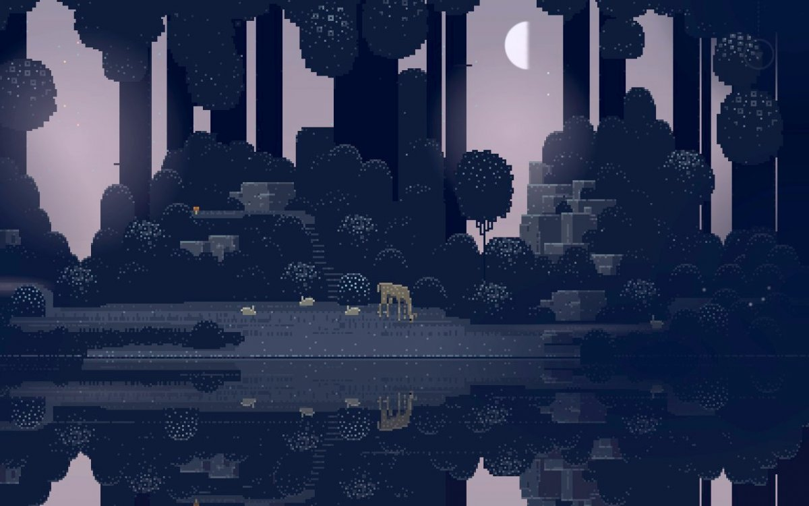

Мир цифрового фото Артема Кашканова
Последнее обновление - 21 октября 2002г Введен раздел ссылки
Мои работы
2002 год

ОСЕНЬ
Лето
Весна
Добро пожаловать на мой сайт
Несмотря на отдельные яркие песни, альбомы Саймона и Гарфанкела были по большей части неровными и оставляли ощущение недоговорённости. Наиболее радикальные критики были склонны обвинять дуэт в слащавости и стерильности.Несмотря на отдельные яркие песни, альбомы Саймона и Гарфанкела были по большей части неровными и оставляли ощущение недоговорённости. Наиболее радикальные критики были склонны обвинять дуэт в слащавости и стерильности.Несмотря на отдельные яркие песни, альбомы Саймона и Гарфанкела были по большей части неровными и оставляли ощущение недоговорённости. Наиболее радикальные критики были склонны обвинять дуэт в слащавости и стерильности .Несмотря на отдельные яркие песни, альбомы Саймона и Гарфанкела были по большей части неровными и оставляли ощущение недоговорённости. Наиболее радикальные критики были склонны обвинять дуэт в слащавости и стерильности.Несмотря на отдельные яркие песни, альбомы Саймона и Гарфанкела были Саймона и Гарфанкела были по большей части неровными и оставляли ощущение недоговорённости. Наиболее радикальные критики были склонны обвинять дуэт в слащавости и стерильности .Несмотря на отдельные яркие песни, альбомы Саймона и Гарфанкела были по большей части неровными и оставляли ощущение недоговорённости. Наиболее радикальные критики были склонны обвинять дуэт в слащавости и стерильности.Несмотря на отдельные яркие песни, альбомы Саймона и Гарфанкела были Саймона и Гарфанкела были по большей части неровными и оставляли ощущение недоговорённости. Наиболее радикальные критики были склонны обвинять дуэт в слащавости и стерильности .Несмотря на отдельные яркие песни, альбомы Саймона и Гарфанкела были по большей части неровными и оставляли ощущение недоговорённости. Наиболее радикальные критики были склонны обвинять дуэт в слащавости и стерильности.Несмотря на отдельные яркие песни, альбомы Саймона и Гарфанкела были
Фауна и флора

ПРО КОТА
ЮМОР
МОНТАЖ
Весна